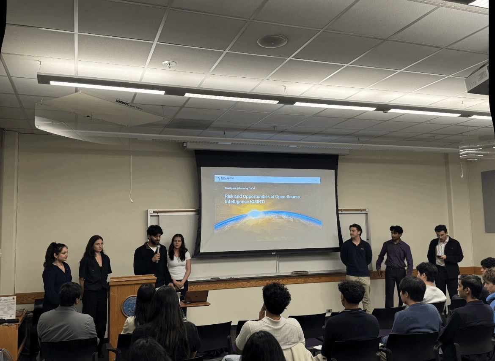
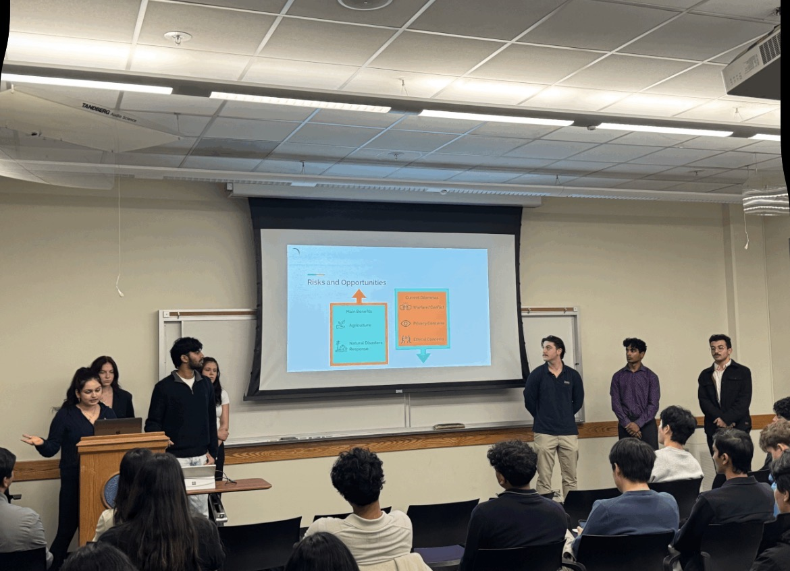

OSINT Remote-Sensing Policy Paper
- Relevant Skills: Remote-Sensing Policy, Satellite Systems Research, Risk Assessment, Multi-Governance Frameworks, OSINT, Technical Communication
Background
The rapid growth of commercial Earth-observation satellites and open-source intelligence capabilities has created both opportunities and risks. High-resolution electro-optical imagery, synthetic aperture radar, AI-enabled analytics, and expanding private-sector constellations support agriculture monitoring, disaster response, and human-rights documentation, but they also raise privacy, security, and escalation concerns. Current space-governance frameworks were not built for this level of commercial sensing capacity, leaving a gap between technical capability and regulatory oversight.
Goals
Our paper set out to:- Research emerging remote-sensing technologies, sensing modalities, and global market trends
- Evaluate international legal frameworks and identify gaps in satellite imagery regulation
- Compare national licensing rules, enforcement capacity, and technical resolution thresholds
- Propose governance mechanisms that balance innovation, privacy, security, and access to beneficial data
- Draft a policy paper and poster under industry mentorship to advance safeguards for responsible OSINT use
Design and Execution
- Research & Analysis:
- Mapped regulatory divergences across the U.S., EU, and developing space nations
- Reviewed limitations of existing bodies such as COPUOS, the Artemis Accords, the Hague Working Group, and the ITU in regulating modern space activity
- Assessed how public-private partnerships and improved sensor resolution can outpace oversight mechanisms
- Policy Recommendations:
- Proposed creation of UN-backed international committee for remote-sensing oversight
- Suggested sector-specific resolution standards for defense, agriculture, climate monitoring, and humanitarian use cases
- Outlined compliance incentives that tie stricter standards to access to contracts, partnerships, and data-sharing channels
Outcome
- Identified key governance gaps in satellite imagery regulation across global markets and sensing modalities
- Advanced a UN committee model with estimated $19M annual cost (<0.2% of global EO budgets) to ensure sustainable oversight
- Delivered concrete recommendations for equitable governance frameworks balancing public and private actors
Image Gallery (Click to zoom):

